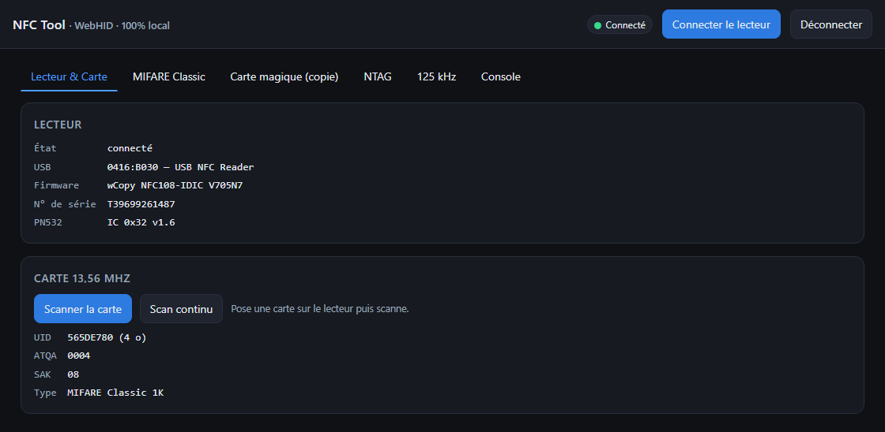
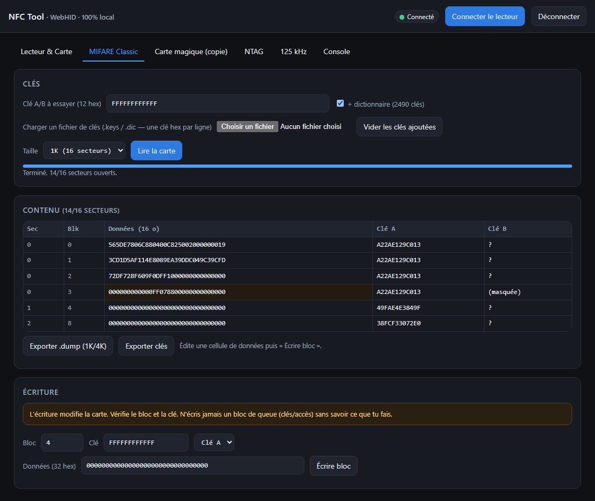
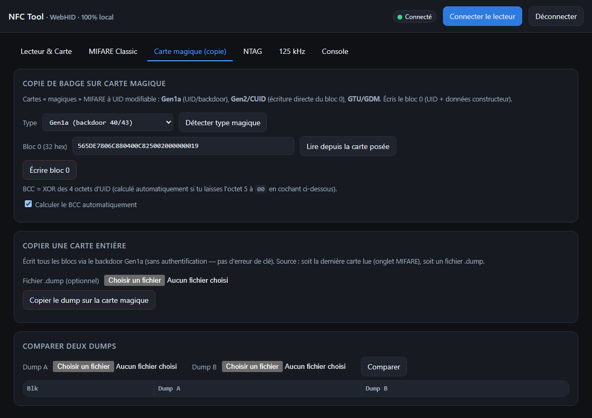
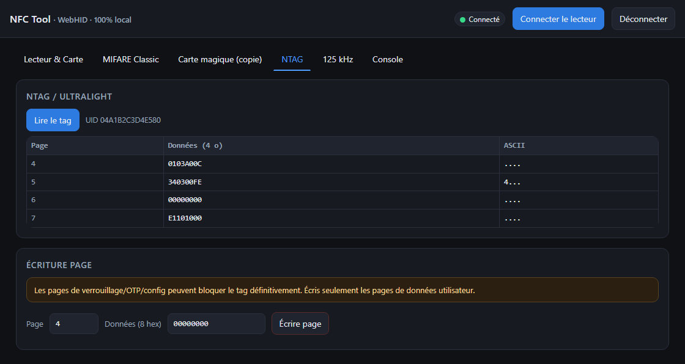
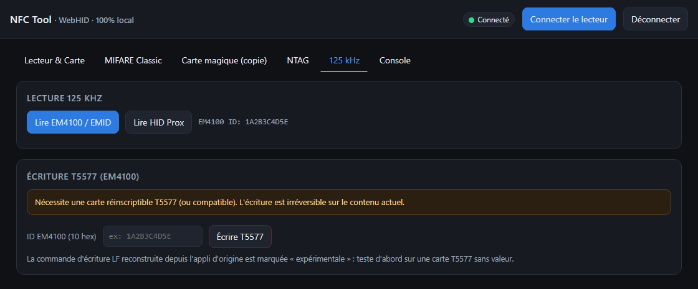
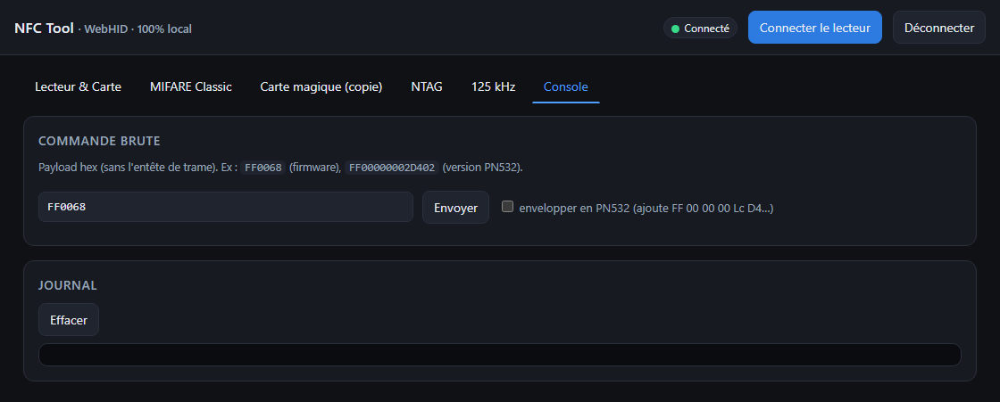

NFC Tool — Guide d'utilisation
Lire, sauvegarder et cloner tes badges NFC — 100 % en local, sans aucun envoi de données.
Pourquoi cet outil ? Il remplace l'application d'origine (nfcPro_x64.exe), qui envoie le contenu de tes cartes à des serveurs distants. Ici, tout reste sur ton PC : aucune connexion réseau.
1Prérequis
Navigateur
L'appli utilise WebHID, disponible uniquement sur les navigateurs basés sur Chromium :
✔ Chrome✔ Edge✔ Brave✔ Opera✘ Firefox✘ Safari
Matériel
- Ton lecteur NFC USB branché (modèle « wCopy / nsccn », VID
0416 ou 2518).
- Les cartes à lire.
- Pour cloner : des cartes magiques vierges (MIFARE 1K « Gen2/CUID » pour le 13,56 MHz, ou T5577 pour le 125 kHz). Une carte normale ne peut pas recevoir l'UID d'un original.
2Ouvrir l'appli et connecter le lecteur
- Double-clique sur
nfc-tool.html (il s'ouvre dans ton navigateur par défaut ; sinon, clic droit → « Ouvrir avec » → Chrome/Brave/Edge).
- Clique sur le bouton bleu « Connecter le lecteur » en haut à droite.
- Une fenêtre du navigateur liste les périphériques : sélectionne la ligne
0416:B030 (ou le PID affiché) puis « Connexion ».
- La pastille passe au vert ● Connecté et les infos du lecteur se remplissent.
La première fois, le navigateur demande l'autorisation d'accéder au périphérique USB. C'est normal et ça reste local.

3Identifier une carte
Onglet « Lecteur & Carte » :
- Pose une carte au centre du lecteur.
- Clique « Scanner la carte ».
- L'appli affiche l'UID, l'ATQA, le SAK et le type de carte (ex :
MIFARE Classic 1K).
« Scan continu » rafraîchit en boucle : pratique pour tester plusieurs cartes à la suite.
4Lire une carte MIFARE Classic
C'est le type le plus courant (badges d'immeuble, bureau, parking…). Chaque secteur est protégé par une clé. L'appli essaie automatiquement un grand dictionnaire de clés connues.
Procédure
- Onglet « MIFARE Classic ».
- Laisse la case « + dictionnaire » cochée (≈ 2490 clés affichées).
- Choisis la taille (
1K le plus souvent).
- Clique « Lire la carte ».
- L'outil trouve les clés secteur par secteur et lit les blocs. La barre de progression avance ; le tableau se remplit.

Le grand dictionnaire est déjà intégré par défaut (~2490 clés, fichier extended-std.keys) : la plupart des badges s'ouvrent directement, sans rien charger.
Encore plus de clés ? Pour un badge récalcitrant, clique « Charger un fichier de clés » et ajoute ta propre liste (une clé hexadécimale de 12 caractères par ligne). Elle s'ajoute au dictionnaire intégré.
Lire le tableau
| Colonne | Signification |
|---|
| Sec / Blk | Numéro de secteur et de bloc. |
| Données | Les 16 octets du bloc. « lecture refusée » = clé non trouvée. |
| Clé A / Clé B | Les clés qui ont fonctionné. La ligne surlignée est le « bloc de queue » (il contient les clés et les droits d'accès). |
5Sauvegarder (.dump) et clés
Après une lecture, en bas du tableau :
- « Exporter .dump » : enregistre une copie exacte de la carte (fichier standard, réutilisable pour cloner ou comme sauvegarde).
- « Exporter clés » : enregistre la liste des clés trouvées, pour les réutiliser plus tard.
Fais toujours un .dump avant de modifier une carte : c'est ta sauvegarde.
6Cloner un badge (carte magique)
Il faut une carte magique. L'UID d'un badge normal est gravé en usine et non modifiable. Pour un vrai double, utilise une carte dont l'UID est réinscriptible (« Gen2/CUID » ou « Gen1a »).
Procédure complète
- Onglet MIFARE Classic : lis le badge d'origine (étape 4).
- Retire-le, pose la carte magique vierge.
- Onglet « Carte magique » → « Détecter type magique » (Gen1a ou Gen2).
- Pour copier juste l'UID : « Lire depuis la carte posée » pré-remplit le bloc 0, puis « Écrire bloc 0 ».
- Pour copier toute la carte : « Copier le dump lu sur la carte magique ».

Beaucoup de systèmes ne vérifient que l'UID : dans ce cas, copier le bloc 0 suffit, pas besoin de tous les secteurs.
7Tags NTAG
Pour les tags NTAG21x / Ultralight (autocollants NFC, cartes de visite…). Onglet « NTAG » :
- « Lire le tag » : affiche toutes les pages (4 octets chacune) + leur texte.
- « Écrire page » : modifie une page de données. ⚠️ N'écris pas les pages de verrouillage/config (risque de bloquer le tag).

8Badges 125 kHz
Pour les badges basse fréquence (EM4100, HID Prox : interphones, parkings anciens). Onglet « 125 kHz » :
- « Lire EM4100 » / « Lire HID Prox » : affiche l'identifiant du badge.
- Écriture T5577 : pour écrire un ID sur une carte réinscriptible T5577 (fonction expérimentale).

Si un badge ne répond ni en MIFARE ni en 125 kHz, c'est peut-être une autre techno (DESFire, iCLASS…) non gérée.
9Console (avancé)
Onglet « Console » : envoie des commandes brutes au lecteur et lis le journal des échanges. Réservé au débogage / exploration. Exemple : FF0068 renvoie la version du firmware.

10Dépannage
| Problème | Solution |
|---|
| « Ce navigateur ne supporte pas WebHID » | Utilise Chrome, Edge, Brave ou Opera (pas Firefox/Safari). |
| Le lecteur n'apparaît pas à la connexion | Vérifie le câble USB ; ferme l'appli d'origine et tout autre logiciel qui utilise le lecteur (un seul programme à la fois). |
| « Aucune carte détectée » alors qu'elle est posée | Recentre la carte. Si tu viens d'enchaîner des opérations bas niveau, soulève la carte et repose-la (reset). |
| Peu de secteurs ouverts | Le dictionnaire étendu (~2490 clés) est déjà chargé. Pour les clés vraiment personnalisées, ajoute ta propre liste ou utilise la récupération nested. |
| L'écriture échoue | Vérifie la clé et le numéro de bloc. Pour l'UID, il faut une carte magique. |
Usage légal uniquement. N'utilise cet outil que sur tes propres cartes et badges, ou avec autorisation.
Fichiers du projet : nfc-tool.html (l'appli), crypto1.js (moteur de récupération de clés), PROTOCOLE-lecteur.md (doc technique), guide-img/ (images de ce guide).